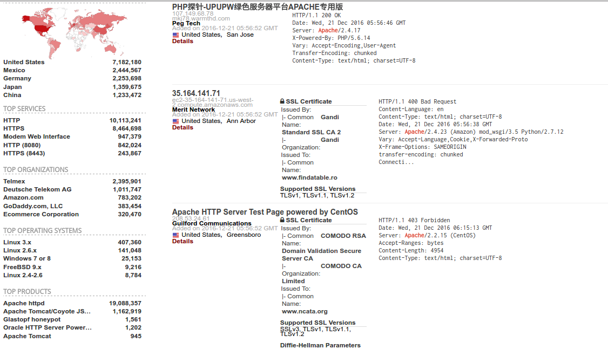

2016/12/22 - TDOH conference¶
Introduction¶
TDOH ( The Declaration of Hacker ) 成立於2013年，是一個學生取向的資訊安全社群組織。由一群對資安極具熱情的學生們組成，期望用社群的力量來推廣資訊安全、增加技術交流、改善台灣資安學習環境。
shodan.io¶
Shodan is a search engine for finding specific devices, and device types, that exist online. 1
For this search, I looked for “apache”
From there you can pivot to a few key areas in the results. Starting on the left sidebar, we see a good amount of summary data:
Results map
Top services (Ports)
Top organizations (ISPs)
Top operating systems
Top products (Software name)
Then in the main section we get the full results list, including:
IP address
Hostname
ISP
When the entry was added to the database
The country it’s located in
The banner itself
Then, for even more information you can click details, which takes you into that host itself:

As with any search engine, Shodan works well with basic, single-term searches, but the real power comes with customized queries.
Here are the basic search filters you can use:

Search example :
apache country:"TW" city:"Taipei"
Or you can use the “Explore” button on the main Shodan site to look at common searches and results, which are illuminating.
後記：我選了Explore 內的 default password 搜尋到Banner裡面含有default password的結果，然後就不小心進去了…這網站真的是太強大啦！
用注音鍵碼當密碼真的安全嗎？ 2¶
臺灣人流傳一種 1qaz (ㄅㄆㄇㄈ，BoPoMoFo) 雜湊演算法來取密碼，就連身邊主管職位的朋友都有在用。乍看之下， 1qaz 雜湊演算法(或是其他注音輸入法)只有臺灣人能夠解析，其他語系的駭客組織並無法探究箇中奧妙。可是，這樣產生出來的密碼真的有足夠的強度嗎？
- 優點:
容易產生很長的密碼 (容易大於最小長度)
容易同時具備英文數字與特殊符號
容易記憶
- 缺點:
容易產生很長的密碼 (容易超過最大長度)
產生出來的密碼具有某種規律
- 特性:
同音字非常多 (即 Hash collisions , 雜湊碰撞)、組成元素單調 - 我愛單單 : ji39420 20 - 我愛丹丹 : ji39420 20 - 目的地 : aj42u42u4
不計四聲變化，共計有 414 種
若再計入四聲變化，排除不在教育部重編國語辭典修訂本裡的 31 個部分組合，則總共有 1,338 種
- 比較:
[a-z0-9] : 36種字元 - 僅需 2 個字元就有 1,296 種組合 - 僅需 3 個字元就有 46,656 種組合 - 僅需 4 個字元就有 1,679,616 種組合
注音鍵碼 : 共有 1,338 ( 414 ) 種組合，占用 2 ~ 4 個字元不等。 - 任兩個中文字的注音鍵碼有 1,790,244 種組合，占用 4 ~ 8 個字元不等。
- 以注音鍵碼為基礎的弱密碼排行:
ji394su3 （ㄨㄛˇ ㄞˋ ㄋㄧˇ ，我愛你）
我愛ＯＯＯ
ＯＯＯ 我愛你
94n3su3 （ㄞˋㄙˇㄋㄧˇ ，愛死你）
cl3au4a83 （ㄏㄠˇㄇㄧˋㄇㄚˇ ，好密碼）
使用者本人姓名的注音鍵碼
中文檔名的注音鍵碼
流行歌曲、歌詞 - jji3s06eji4 （ㄨㄛˇㄋㄢˊㄍㄨㄛˋ，我難過） - ji3ul4zo （ㄨㄛˇㄧㄠˋㄈㄟ，我要飛）
字元 - 94 （ㄞˋ，愛） - ji3 （ㄨㄛˇ ，我） - su3 （ㄋㄧˇ，你） - cl3 （ㄏㄠˇ，好） - c8 （ㄏㄚ，哈） - xk7 （ㄌㄜ˙，了） - a8（ㄇㄚ，嗎） - n3 （ㄙˇ，死） - yjo4 （ㄗㄨㄟˋ，最） - fu;6 （ㄑㄧㄤˊ，強）
- 結論：用注音鍵碼當密碼真的安全嗎？:
社交工程¶
社交工程技巧：操控人類心理的藝術
社交工程技巧涵蓋許多用以操控人類心理，使他們採取特定行動或透露機密資訊的技巧。「社交工程技巧」一詞指的通常是用以收集資訊或電腦系統存取權限的詭計。社交工程圈套最常見於 Web 資安威脅攻擊中，利用目前備受矚目的重大事件與新聞作為誘餌，無論是政治、運動、娛樂性質，同時也不分全球性或地區性。此外，社交工程圈套也可能利用日常活動作為誘餌，例如線上理財、投資、帳單管理以及購物等等。
沒有科技可以有效防護
Reference¶
- 1
A Shodan Tutorial and Primer : https://danielmiessler.com/study/shodan/#gs.9d0jrME
- 2
TDOH Conf 2016 用注音鍵碼當密碼真的安全嗎？ by PN Wu (小平) : https://hackpad.com/TDOH-Conf-2016-by-PN-Wu–Z30oHnsWarW
- 3
APT Attack : http://blog.trendmicro.com.tw/?p=123
- 4
[影片]APT攻擊:一場沒有中立國的戰爭(真實案例模擬) : https://www.youtube.com/watch?v=RyQiz8AudQo
- 5
shodan-cracking-ip-surveillance-dvr : http://www.praetorianprefect.com/2009/12/shodan-cracking-ip-surveillance-dvr/